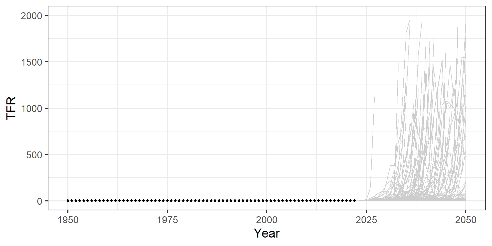
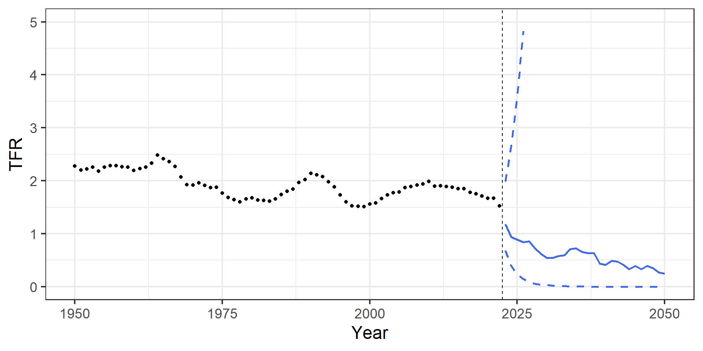

Demographic Forecasting
Lecture 3: parametric approaches
March 6, 2024
Course overview
- Lecture 1: direct extrapolation by (generalized) linear models
- Lecture 2: direct extrapolation by time-series methods
- Lecture 3: parametric approaches
- Lecture 4: Lee-Carter method
Parametric methods
Some advantages (see, e.g., Congdon 1993):
- Smoothness
- Parsimony
- Interpolation
- Comparison
- Trends and forecasting
Parametric methods
Objective: obtain best fit with the smallest number of parameters
Trade-off:
- more parameters, better fit
- more parameters, less statistical stability (overparameterization)
Fertility parametric methods
Hadwiger (1940): \(\;f_{x} = \frac{ab}{c} \left( \frac{c}{x}\right)^{3/2} e^{-b^2 \left( \frac{c}{x} + \frac{x}{c} - 2 \right)}\)
Chandola et al. (1999):
- Peristera and Kostaki (2007):
\[\;f_{x} = c_1 e^{- \left( \frac{x-\mu}{\sigma_x} \right)^2}\]
with \(\sigma_{x} = \sigma_{1x}\) for \(x\leq \mu\) and \(\sigma_{x} = \sigma_{2x}\) for \(x > \mu\)
Mortality parametric methods
- Adult mortality (typically \(x \geq 30\)):
- Gompertz (1825): \(\;m_{x} = e^{a + b x}\)
- Makeham (1860): \(\;m_{x} = c + e^{a + b x}\)
- Perks (1932): \(\;m_{x} = c + \frac{e^{a + b x}}{1+e^{\alpha + b x}}\)
- Overall mortality:
- Thiele (1871): \(\;m_{x} = a_1e^{- b_1 x} + a_2e^{- \frac{1}{2}b_2^2 (x-c)^2} + a_3 e^{b_3 x}\)
- Siler (1979): \(\;m_{x} = a_1e^{- b_1 x} + a_2 + a_3 e^{b_3 x}\) (for animals, but used in demography - see, e.g., Canudas-Romo and Schoen (2005))
- Heligman and Pollard (1980): \(\;\frac{q_{x}}{1-q_x} = A^{(x+B)^C} + D e^{-E (\ln(x) - \ln(F))^2} + GH^x\)
A simple parametric model for fertility
A simple parametric model for fertility
It looks like a simple log-quadratic model could fit the age-pattern of fertility rather well:
\[ \ln \left( f_{x,t} \right) = \beta_{0,t} + \beta_{1,t} x + \beta_{2,t} x^2 \]
i.e. we could fit a separate model for all years \(t\) and derive time-series for the model’s parameters.
Exercise
Exercise
Open your R session. Load the FertSWE.Rdata dataset, and consider only data from 1950 onward. Further, focus on the year 2000, and fit a generalized linear model for births with exposures as an offset using age and age-squared as covariates. Plot the fitted values against the observed log rates.
One possible solution
One possible solution
Exercise
Exercise
Repeat this for all years the dataset (1950-2022), and plot the three time series of the estimated parameters over time.
One possible solution
One possible solution
One possible solution
Exercise
Exercise
Now forecast the three time-series using the most appropriate ARIMA(\(p\),\(d\),\(q\)) model, and derive the forecast age-pattern of fertility in 2050.
One possible solution
One possible solution
One possible solution
Uncertainty
- We can use the ARIMA simulations for future paths of the coefficients to derive prediction intervals for the age-pattern of fertility as well as for summary measures
TFR simulations
TFR 80% CI
PIs with parametric approach
- uncertainty appears to escalate quickly with forecasting horizon
- Why is that?
Simulated parameters
PIs with parametric approach
- large uncertainty in the forecast parameters
- where does this stem from?
Parameters’ correlation
Parameters’ correlation
- The time-series of the three estimated parameters are highly correlated between each other
- Yet, we are treating them independently by fitting univariate time-series models
- It would be better to use multivariate time-series methods, or a methodology that is based on a single time-series, like the Lee-Carter method (see tomorrow)
Towards Lee-Carter I
- We could generalize the simple parametric model for fertility to allow for a linear time trend: \[\ln \left( f_{x,t} \right) = \beta_{0} + \beta_{1} x + \beta_{2} x^2 + \beta_3 t\]
- Extrapolating the linear time trend can provide us with fertility forecasts
Exercise
Exercise
Fit a single GLM model to the same data, which includes a quadratic shape for age and a linear trend for time. Extrapolate the linear time index to compute fertility forecasts up to 2050.
One possible solution
Log-linear time trend
Log-linear time trend

Log-linear time trend
Log-linear time trend
Log-linear time trend
Towards Lee-Carter II
Alternatively, we could relax the linear time trend assumption and estimate one parameter for each year:
\[\begin{align*} \ln \left( f_{x,t} \right) &= \beta_{0} + \beta_{1} x + \beta_{2} x^2 + \sum_{i=2}^n \gamma_i \\ &= \beta_{0} + \beta_{1} x + \beta_{2} x^2 + \kappa_t \end{align*}\]- Extrapolating the non-linear time trend (e.g. using an ARIMA model) can provide us with fertility forecasts
Flexible time index
Flexible time index
Flexible time index
Flexible time index
Flexible time index
Day 3 assignment
Assignment
Load the mortality data
MORTSWE.Rdata, and focus on male mortality from 1950 onwards for ages \(30\leq x \leq 100\). Fit and forecast adult mortality up to 2050 using the parametric Gompertz model, fitting a model for each year independently [hint: this is a generalized linear model with deaths as response variable, exposures as an offset, and an intercept and age as covariates]. To forecast, fit the most appropriate ARIMA(\(p\),\(d\),\(q\)) models to the time-series of the two estimated parameters. Compute the 95% prediction intervals for life expectancy using simulations from the two ARIMA models.Load the mortality data
MORTSWE.Rdata, and focus on male mortality from 1950 onwards for ages \(30\leq x \leq 100\). Fit and forecast adult mortality up to 2050 using two different approaches:
- a Gompertz model with log-linear time trend, i.e. \(\ln \left( m_{x,t} \right) = \beta_{0} + \beta_{1} x + \beta_2 t\)
- a Gompertz model with flexible time index, i.e. \(\ln \left( m_{x,t} \right) = \beta_{0} + \beta_{1} x + \kappa_t\)
Plot the life expectancy forecasts of the two models (no need to derive PIs).
Hints: you can use the functions inside the LifetableMX.R code for constructing life tables and deriving estimates of life expectancy

European Doctoral School of Demography 2023/2024 \(\cdot\) INED, Aubervilliers